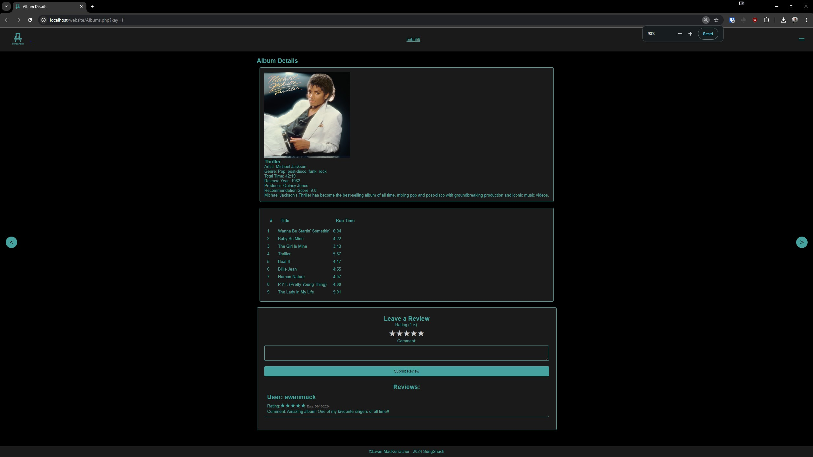
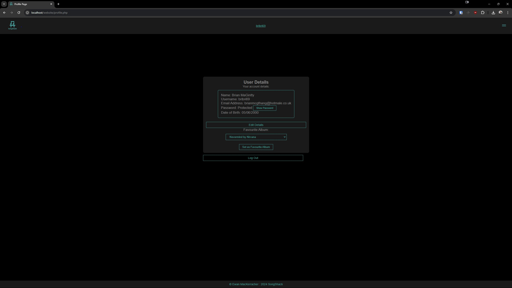

A fully functional music recommending website for First year Web Development module
Including custom pages about each album along with the ability to review them

A dynamically changing ranking system based on user reviews
A fully functional login/register page


A profile page allowing you to change your account data and update your favorite song